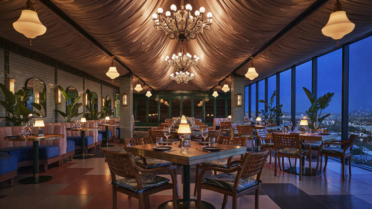

Restaurants

Restaurants: Taniti currently has 10 restaurants: five serve
mostly local fish and rice, three serve American-style meals,
and two serve Pan-Asian cuisine.
Super Sub Sway [3 Stars]
Leans Cuazeens [4 Stars]
All American Burgers [4.5 Stars]
El Canticomochochoco [4.7 Stars]
Carribian Delights [5 Stars]